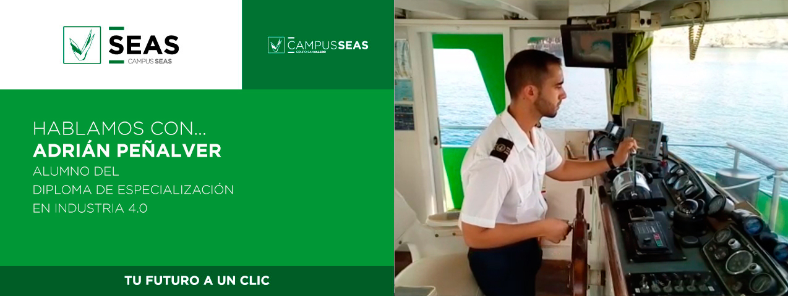
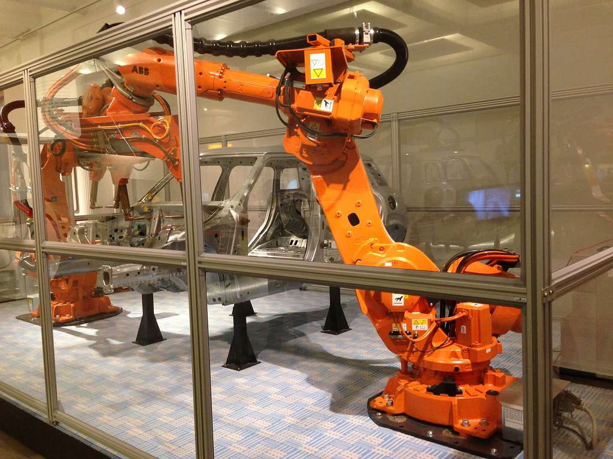
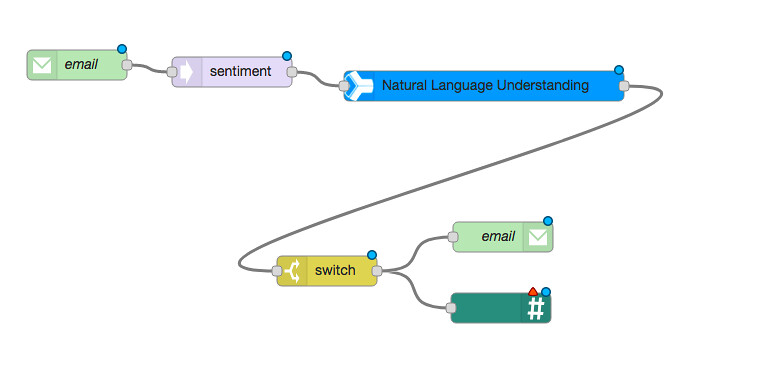
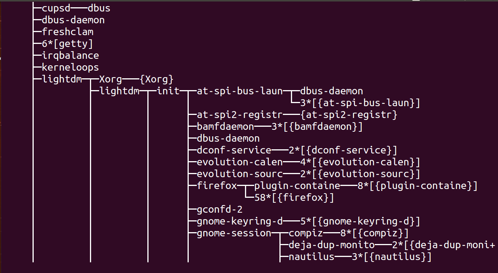

Blog
Exposicion
20/12/2020
5º edición Feria Makers Murcia
Entrevista

17 Octubre, 2022
Entrevista Master Industria 4.0
Exposicion

05/03/2022
Astillero 4.0
Desarrollo

29/11/2019
IoT Sector naval (Node-Red)
Desarrollo
15/09/2024
IoT y el protocolo Mqtt
Desarrollo

16/09/2024
D-Bus